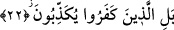

sonundaki ‘Allah’a secde et ve yalnızca ona yaklaş’ (Alak 96/19) âyet-i kerimesini
okudu. Hem Peygamber Efendimiz hem de onunla birlikte bulunan mü’minler secdeye
kapandılar. Onlar secde ederken Kureyş başlarında durup, el çırpıp ıslık çalarak onlarla
alay ediyorlardı.” [56]
İmam-ı Azam Ebû Hanife tefsirini yaptığımız bu âyete dayanarak tilavet secdesinin
vâcip olduğu hükmünü çıkarmıştır. Onun yaklaşımı şöyledir; herhangi bir şeyin
yapılmadığını kınanmış olması o şeyin yapılmasının vâcip olduğunu gösterir.
Ebû Hureyre (r.a.) Peygamber Efendimiz’in, bu âyet okunduğunda secde ettiğini
rivâyet ediyor. Ayrıca Hulefa-i Raşidîn’in de bu âyet okunduğunda secde ettikleri
rivâyet olunur. Bu sûredeki secde âyeti Kur’an-ı Kerim’deki secde âyetlerinin
onüçünsüdür. İmamlarımızın içtihadına göre secde âyetini okuyan ve dinleyen
kimselere, bunu ister kasıtlı okumuş ve dinlemiş olsunlar, isterse kasdetmiş olmasınlar
secde yapmaları vâciptir.
İbn Abbas (r.a.)’dan rivâyet edildiğine göre mufassal sûrelerde secde yoktur. Nitekim
Hasan (rh.) da burada secdenin vâcip olmadığını söylemiştir.
Dört mezhebten üçüne göre okuduğumuz âyette yer alan “yescudûne” kelimesi
okunduğunda secde edilir. İmam Malik’e göre ise sûre bitirildiğinde secde edilir.
et-Te’vilâtü’n-Necmiyye’de bu âyetten şu işâretler çıkarılıyor: Nefs, heva, beşerî ve
tabiî kuvvetlere kalp resulüne indirilen Kur’âni ve ilâhi nasihatler okunduğu zaman
onlar boyun eğmezler. Onu dinlemek, emirlerine sarılmak ve ahkamını kabul etmek
istemezler.
22. Aksine, kâfirler yalanlıyorlar.
“Aksine kâfirler” inanılmasını gerekli kılan bütün deliller var olduğu halde kıyamet
ahvali ve korkularını dile getiren Kur’an’ı “yalanlıyorlar.” Bu nedenle Kur’an
okunduğunda ona boyun eğip secde etmiyorlar.
Okuduğumuz bu ifâde, zamir yerine zâhir olan kelimenin konulmuş olması
kabilindendir. Bunun amacı onların kâfir olduklarını tescil ve Kur’ana boyun
eğmemeleri noktasında sebebin ne olduğuna işâret etmektir.
Bu âyette ifâde edilen anlam, bundan sonra gelen Bürûc sûresi 19. âyette “belilleziyne
keferû fi tekzîb” şeklinde ifâde olunurken burada “yükezzibûn” deniliyor. Aynı anlamın
değişik sigalarla ifâde edilmesi, her iki sûrede âyet sonlarındaki ses uyumunun
gözetilmesi sebebiyledir. Öte yandan her iki sûrede hem kullanılan sözcük doğru ve hem
de mânâ kalitesinden herhangi bir şey kaybedilmemiştir. Bazı tefsirlerin ifâdesine göre
kalp ile tekzibden maksad, “tasdik etmemek” anlamınadır. Tasdik etmemek terakkiden
yüz çevirmek demektir. Çünkü îman etmemek kuşku duymakla da olur, yalanlamak ve